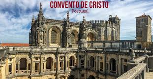

Day 3: Next Stop-Tomar (Th:5/23)
After my night in Sintra, I'm taking the train back to Lisbon and hopping on a train bound for Tomar. The only thing I have planned to see in this town is the Convento de Cristo, the former headquarters of the Knight's Templar and yet another UNESCO World Heritage Site. The rest of the day will be similar to Sintra in terms of exploring what the city has to offer. The day ends back at the hostel.